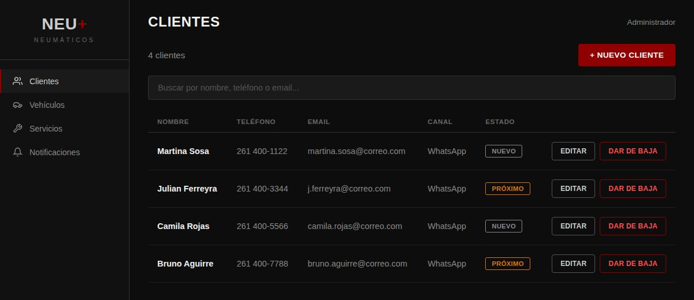

Neu+
Sistema de seguimiento post-venta para un taller automotriz, en uso real por un cliente: gestión de clientes y vehículos, consulta pública de historial por patente, y notificaciones automáticas por WhatsApp.

Recreación de la UI con datos de ejemplo — la app real corre en producción con datos del cliente.
El problema
Un taller de neumáticos manejaba a sus clientes y el historial de servicios de cada vehículo en papel y planillas sueltas. No había forma de avisarle a un cliente cuando le tocaba un service, ni de que alguien (un comprador de auto usado, por ejemplo) pudiera consultar el historial de mantenimiento de un vehículo sin llamar directamente al taller.
Qué construí
Una app full-stack sobre Supabase (Postgres + Auth + Edge Functions) donde el taller carga clientes, vehículos y servicios con fotos desde un panel con búsqueda y bajas lógicas (los registros no se borran, se dan de baja para no perder el historial). Además armé una pantalla pública de consulta por patente, protegida con Cloudflare Turnstile para evitar scraping, y un sistema de notificaciones automáticas por WhatsApp para avisarle al cliente cuando su vehículo tiene una novedad.
Desafíos técnicos
-
Row Level Security sin recursión: las políticas RLS de Supabase
necesitan consultar la tabla de perfiles para saber si un usuario es admin, lo
que genera recursión infinita si no se resuelve con cuidado. Lo solucioné con
funciones
SECURITY DEFINERque evalúan el rol por fuera de la política que las llama. - Privacidad en la consulta pública: la Ley 25.326 de protección de datos personales exige no exponer datos innecesarios; la vista pública de consulta por patente muestra el historial del vehículo pero nunca el nombre del titular.
- Auditoría infalsificable: triggers en la base que fijan automáticamente quién creó cada registro, sobreescribiendo cualquier valor que intente mandar el cliente desde el frontend.
Qué haría distinto
Las notificaciones por WhatsApp dependen de la aprobación de Meta para la WhatsApp Business API, que tardó bastante más de lo esperado. Si lo rehiciera, arrancaría ese trámite en paralelo desde el día uno del proyecto. También está planeado (pero todavía no implementado) un sistema de órdenes de trabajo para que los mecánicos carguen diagnósticos desde el celular y el admin los apruebe antes de convertirlos en presupuesto.